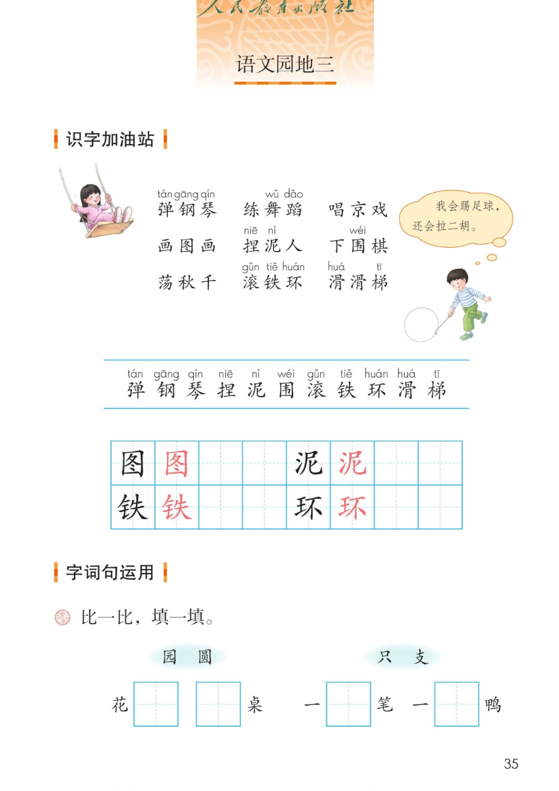
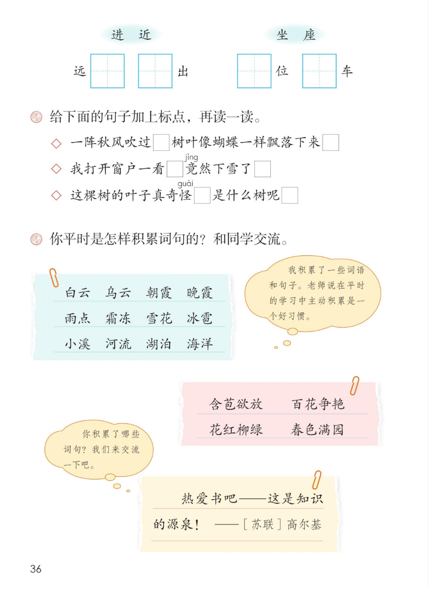
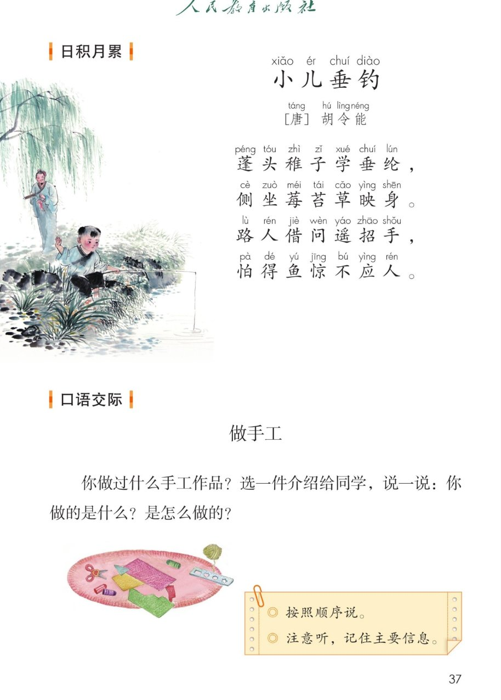
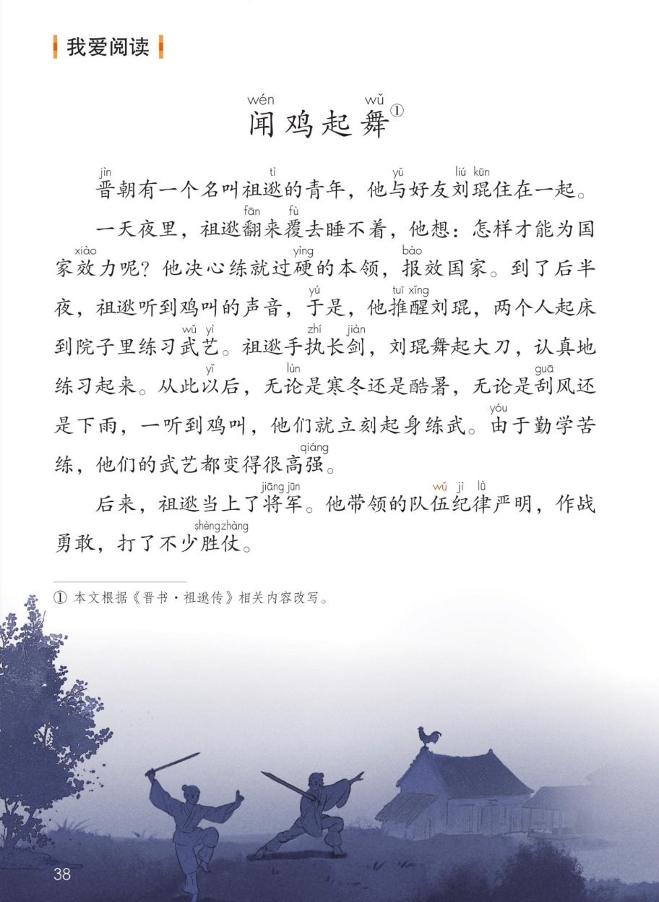

统编版 · 二年级上册 · 第三单元
第三单元 · 单元课件
语文园地三 · 识字加油站 · 字词句运用 · 小儿垂钓 · 做手工 · 闻鸡起舞
课本第 35~38 页，点哪句读哪句
技能词 9 个
会认 11 字
会写 4 字
古诗 1 首
名言 1 句
闯关 8 题
这个单元学了什么：彩虹、去外婆家、数星星的孩子，都在讲孩子眼中的世界。
语文园地三带大家认一认本领词（弹钢琴、捏泥人……），比一比同音字（园和圆、坐和座），
再背一首古诗、读一个闻鸡起舞的故事。点一下任一卡片或句子，就能听。
① 识字加油站 · 会做的事
课本第 35 页
点词卡听读音，红色的拼音是本页要认的字
照样子说一说：“我会踢足球，还会拉二胡。”——你还会做什么？也用上今天的词说两句吧。
本页要认的字 · 11 个
都藏在课本第 35 页的生字条里，点字听读音
② 写字 · 图 泥 铁 环
课本第 35 页 · 田字格
点卡片听书写要点
③ 字词句运用 · 比一比，填一填
课本第 35~36 页
先自己想，再点卡片对答案
每组两个字读音相同或相近，意思却不一样。先把课本上的田字格填好，
再点卡片看答案和记法。
给下面的句子加上标点，再读一读
课本第 36 页
点句子揭晓标点
◇一阵秋风吹过树叶像蝴蝶一样飘落下来， 。
前半句话没说完，用逗号；一句话说完了，用句号。
◇我打开窗户一看竟然下雪了， ！
“竟然下雪了”又惊又喜，声音要扬起来，句末用感叹号。
◇这棵树的叶子真奇怪是什么树呢， ？
“是什么树呢”是在发问，句末要用问号。
④ 你平时是怎样积累词句的？
课本第 36 页
点词卡听读音
课本气泡：我积累了一些词语和句子。老师说在平时的学习中主动积累是一个好习惯。
写景词 · 12 个
春色词 · 4 个
热爱书吧——这是知识的源泉！
—— [苏联] 高尔基
交流一下：你积累了哪些词句？我们来交流一下吧。
⑤ 日积月累 · 小儿垂钓
课本第 37 页
点哪句读哪句
小儿垂钓
[唐] 胡 令 能
蓬头稚子学垂纶，
侧坐莓苔草映身。
路人借问遥招手，
怕得鱼惊不应人。
诗意（老师的话）：一个头发乱蓬蓬的小孩子学钓鱼，侧着身子坐在莓苔上，野草遮住了他的身影。
过路人向他问路，他远远地摆手，生怕惊动了鱼儿，不敢回答。
⑥ 口语交际 · 做手工
课本第 37 页
说一说，评一评
课本原题：你做过什么手工作品？选一件介绍给同学，说一说：你做的是什么？是怎么做的？
1
选一件作品
纸飞机、贺卡、泥人、折纸……选你最拿手的一件。
2
按顺序说
用上“先……再……接着……最后……”，把做法说清楚。
3
认真听，记信息
听同学说的时候，记住主要信息，听不明白可以礼貌地提问。
说的时候
- 说清楚做的是什么
- 按照顺序说做法
- 声音响亮，让大家听清
听的时候
- 眼睛看着说话的同学
- 记住主要信息
- 有不明白的，等他说完再问
我说清楚做的是什么☆☆☆
我按顺序说了怎么做的☆☆☆
我声音响亮，大家都听得见☆☆☆
我听完后记住了同学的主要信息☆☆☆
⑦ 我爱阅读 · 闻鸡起舞
课本第 38 页
点哪段读哪段，读完看故事三步卡
故事三步卡
照着这三步，把这个故事讲给别人听
起因
祖逖翻来覆去睡不着，决心练就过硬的本领，报效国家。
经过
一听到鸡叫，就推醒刘琨起床练武；寒冬酷暑、刮风下雨，从不间断。
结果
武艺高强；祖逖当上将军，队伍纪律严明，打了不少胜仗。
课本注释：① 本文根据《晋书 · 祖逖传》相关内容改写。现在“闻鸡起舞”用来形容及时奋发、刻苦自励。
⑧ 单元闯关 · 8 题
点选项就判对错，答完自动算分
已经答 0 题，答对 0 题。
课本原页 · 第 35~38 页点图放大

第 35 页 · 识字加油站 · 比一比填一填

第 36 页 · 加标点 · 积累词句

第 37 页 · 日积月累 · 口语交际 做手工

第 38 页 · 我爱阅读 闻鸡起舞